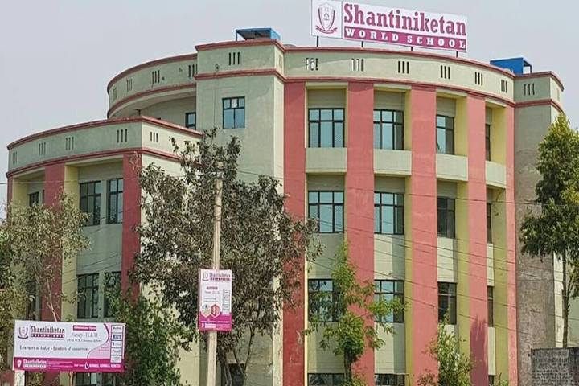

|

"A Child’s Mind is like a Dry Sponge, Ready to absorb. All you have to do is take it to the water."
The school curriculum is segregated into five education levels:
The Pre-Primary Section (classes Nursery & Preparatory).
Primary Section (classes I-V).
evolves into the Upper Primary Section (classes VI-VIII).
which in turn matures into the Secondary Section (classes IX-X) and Senior secondary Section (classes IX-XII).
The curriculum encourages students to develop an understanding of key concepts. In the curriculum, at this level, concepts are represented by different examples that share common attributes. In this way, a sound base is built to equip them with appropriate attitude and skills.
The teaching is project based, activity oriented and content centric. Theme teaching is in practice to promote cross curriculum understanding.
- Language I (English)
- Language II (Hindi)
- Language III ( Sanskrit/Urdu)
- Mathematics
- Sciences
- Social Science,Computer Application
- optional subject:
- G.K.
- value education
- art & craft
- performing art, etc.
Internal Assessment in the following subjects is done on the basis of the grades of a five-point scale (i.e. A, B, C, D):-
- ASSESSMENT:
Evaluation of academic subjects in classes III to VIII is done both through Periodic Assessment, Half Yearly Examination and Annual Examination. Periodic Assessments are spread through the year and it is Theory/Activity /Project based, the Half Yearly and Annual Examinations are conducted at the end of each term i.e. September and March.
- SECONDARY SECTION:
The curriculum is spread over in two terms, Term-I from April to September and the Term-II from October to March. The Periodic Assessment is a part of school based assessment and Half Yearly Examination and Annual Examination at the end of each term.
- SR. SECONDARY SECTION:
The school offers a wide range of academic choices in Commerce and Science subjects in class XI & XII.
- Subjects offered:
Science - Commerce
: English Core, Accountancy, Business Studies, Economics, Mathematics / Information Practices / Physical Education.
|